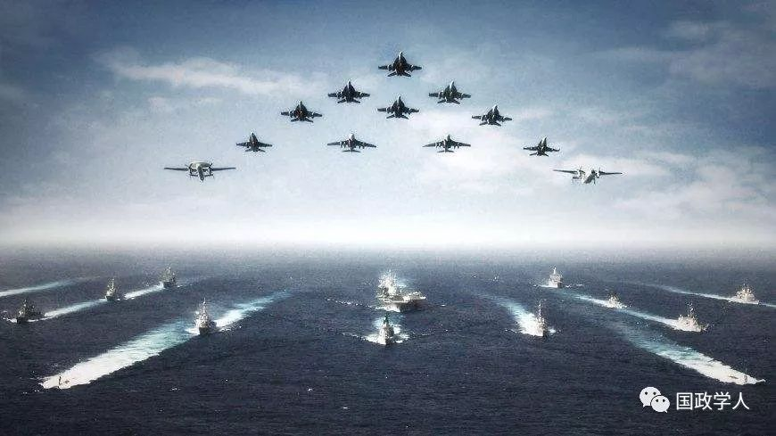

收录于合集
简 介
【作者】 冯玉军 ，复旦大学国际问题研究院教授、副院长，主要研究俄罗斯欧亚问题、国际安全、国际战略与大国关系; 陈宇 ，中国现代国际关系研究院助理研究员，主要研究俄罗斯外交。
**【 编辑】**陈舜波
【校对】 杨洋 蔡宇
【来源】 《现代国际关系》 2018 年第 12 期
内容提要
伴随着第四次科技革命的浪潮，一场世界性的军事革命正紧锣密鼓展开。 美国、俄罗斯、中国等主要大国竞相追赶新军事革命浪潮，加速新军事技术与装备的研发与部署 。这对国际安全体系产生重要影响，导致既有裁军与军控体系加速崩塌、大国战略竞争加剧、世界动荡的风险上升。 国际安全的未来既取决于技术革命的广度、深度与速度，也有赖于大国能否在关键问题上管控分歧、避免冲突，构建起一个适应新现实与新趋势的国际安全新体系 。在这一过程中，中国应当也必须发挥更大且更具建设性的作用，这不仅有利于维护世界和平与发展，也是中国奠定在未来国际体系中地位的必由之路。
关键词： 新军事革命 国际安全 国际战略 军备竞赛 裁军与军备控制

正文
近些年来，世界新军事革命迅猛发展，各主要大国加紧开发新型军事技术和军事装备，一场新型军备竞赛隐然若现。这对国际安全体系构成了深刻影响，导致既有军控体系加速崩塌、大国战略竞争加剧、地区冲突频发，世界动荡的风险上升。国际安全体系的未来将取决于技术发展的前景和大国是否能进行有效的合作。随着中国在国际安全体系中地位与影响的日益提升，未来应发挥更大作用并承担更多责任，以 “新安全观” 不断参与和引领国际安全合作规则与机制构建，推动国际安全体系更新与转型，以使其能更好地维护国际安全与世界和平。
**1
**
****大国争相追赶世界新军事革命浪潮
当前的世界新军事革命源自 21 世纪以来的第四次科技革命。这场科技革命以人工智能、清洁能源、量子信息技术、虚拟现实以及生物技术为主的全新技术革命。这些领域也构成了世界新军事革命的主要方面，但新军事革命不局限于这些领域，一些过去已经很重要的军事科技领域发展也出现了新的特征，同样属于新军事革命的范畴。总的来看， 大国是世界新军事革命的主角，其中领头羊是美国，而俄、中等大国也在努力跟上美国的步伐。 这场新军事革命的发展 呈现出全方位、跨越式的特征，一些领域即将取得突破性进展，从而重塑未来战争形态和国际安全格局 。大国围绕在该领域的竞争态势尤其值得关注:
**( 一) 重新重视发展核力量，并加速推进核力量的现代化。**伴随冷战的结束，美苏两个大国一度在核竞争方面“收缩战线”，特别是三个削减战略武器条约大幅削减了核武库。但近些年，随着大国竞争的加剧，核国家又开始比拼核力量。一个突出的特征是， 由于数量受限，美俄将提升核武器质量作为重点 。
特朗普上台后，美国的核政策变得更具进攻性。 2018 年初公布的美国新版《核态势评估》报告要求推动核武器、核基础设施和运载系统的现代化，大力发展新型小威力战术核武器，并放宽了核武使用条件，准备用核武器应对“非核战略攻击”。美国将在未来 30 年更新其“三位一体”核武库，部署“哥伦比亚”级战略导弹核潜艇、新一代战略轰炸机 B21、新型洲际弹道导弹、新型空射弹道导弹等。
为了维持对美战略平衡，财政捉襟见肘的俄罗斯也把军备建设重心放在核力量现代化上。 普京连任后表示，俄巩固武装力量的优先方向是战略核盾牌和空天军。俄《2018 － 2025 年国家武器装备计划》的首要方向就是发展战略核力量。根据《经济学人》评估，俄重整核力量的工作大约完成了一半: 陆基方面，批量生产亚尔斯新型洲际导弹，井式的“萨尔马特”洲际导弹也在 2017 年底进行了首次试射，“边界”公路机动战略导弹已完成 5 次试射; 空基方面，升级后的首架图－160M2 战略轰炸机于2017 年底下线，并在2018 年1月成功试飞，计划2023 年开始批量装备; 海基方面，已有3 艘最新型的“北风之神”战略核潜艇交付海军，5 艘正在建造，最新型的“布拉瓦”海基洲际导弹的试射成功率也在不断提高。
除俄美外，中国、巴基斯坦、印度等核国家也在努力实现核武库的现代化。
**( 二) 加紧研发新型反导系统，试图抵消对手的战略进攻能力。**美国是反导领域的翘楚，经过几十年发展，已拥有世界上最全面的弹道导弹防御系统。近年来，美国试图把国内的反导系统扩展到全球，以抵消俄罗斯等对手的战略进攻能力，打破现有战略平衡。2004 年，美国在阿拉斯加部署陆基拦截导弹。2010 年，美国决定在欧洲分阶段部署反导系统，2016 年启动位于罗马尼亚的导弹防御系统，并在波兰开建第二个导弹防御系统，计划 2018 年内启用。2012 年，美国又提出建设亚太反导系统，并在2017 年借助朝鲜半岛局势紧张在韩国部署“萨德”系统。《经济学人》评估认为，美导弹防御系统尚无力应付洲际导弹的大规模攻击，但正在进行实质性改进。2017 年 7 月，美国成功进行洲际导弹拦截测试。
其他国家的反导能力虽与美国有很大差距，但也努力试图追上美国的脚步。当前俄罗斯总体上沿用苏联时期部署在莫斯科周边的 A－135 导弹防御系统，但也积极研发第三代反导系统 A－235。A－235 系统将由 51T6 远程拦截弹、58Ｒ6 中程拦截弹和 53T6M 近程拦截弹三层防御体系构成，射高可达800～1000 公里、射程 1000～1500 公里、射速超过 20
马赫。其中，作为关键组件的 53T6M 拦截弹已多次成功试射。俄发展反导能力的另一个重要措施是整合反导和防空系统，形成“高低搭配”的空天防御布局，因此正加快部署S－400 防空系统，并加紧研发 S－500 系统。
**( 三) 争相研发高超音速武器，以求打破战略平衡。**大国热衷高超音速武器的原因在于，这种武器可以较低成本达到类似天基动能武器的效果，轻易穿越反导系统，打破战略平衡。美国是高超音速武器概念的发明者，早在 20 世纪 60 年代就试验了超燃冲压发动机，速度达到 7．3 马赫。2002 年，美国推出“常规快速全球打击”计划，加快了高超音速武器的研发步伐，谋求在1小时内高精度打击全球任意目标。美国正在研发的项目包括空军“高超音速打击武器”( HSSW)、空军和国防高级研究计划局“高超音速吸气式武器”( HAWC) 和“战术助推滑翔器”(TBG)、陆军“先进高超音速武器”(AHW) 等。这些项目已积累不少成果，并在试验中取得了部分成功。美《防务内情》网报道，美国防部承诺将在 2018～2022 财年间率先给欧洲司令部和太平洋司令部装备高超音速武器，以形成一定的“常规快速全球打击”能力。俄罗斯也将其列入《2018－2025 年国家武器装备计划》重点，并取得不少成果。2018 年 7 月，俄国防部确认，速度可达 20 马赫的“先锋”超高音速飞行器已开始批量生产，速度可达 10 马赫的“匕首”高超音速巡航导弹已投入战斗值班。中国也在研发高超音速武器。2014 年 1 月，中国国防部证实正在研制高超音速飞行器。2017 年底，美国《国家利益》杂志网站报道，中国的高超音速飞行器东风－ZF已成功完成 7 次试射，速度在 5～10 马赫之间。
**( 四) 不断巩固网络战能力，积极实践网络战理念。**美国很早就开始研究网络战。1993 年，兰德公司的阿奎拉( John Arquilla)和罗费( David Ronfeldt)发表《网络战就要来了》一文，探讨了网络战的概念和作战理念。2009 年，美军成立网络司令部，并在2011 年和 2015 年推出了《网络空间行动战略》和《国防部网络战略》报告，明确了网军的任务和建设目标。2016 年 10 月，美国防部宣称，网络司令部所属的 133 支行动部队均已具备初步作战能力，到2018 年规模将扩充至 6200 人。2017 年 8 月，特朗普宣布，美军网络司令部将升格为美军第十个联合作战司令部，地位与中央司令部等主要作战司令部相同。2012 年以来，北约每年都举行世界上规模最大、技术最前沿的“锁定盾牌”( Locked Shields) 网络攻防演习。
俄罗斯 2000 年就出台《信息安全学说》，2013年又发布《2020 年前国际信息安全领域国家政策框架》。2017 年 2 月，俄国防部长绍伊古称俄军已经建成信息作战部队。《生意人报》披露，俄网军约有 1000 人，每年预算 3 亿美元，拥有大型“僵尸网络”、无线通讯干扰器、网络逻辑炸弹等多种攻击手段。
除美俄外，许多国家都在网络军事力量建设领域投入重金。以色列有 10 多个网络战小组。美官员称，著名的“震网”和“火焰”病毒就是由以、美共同开发。
随着各国扩充网军力量，网络战也逐步从构想走向现实。 1991 年的海湾战争中，美军通过病毒攻击使伊拉克防空系统瘫痪，这是在传统战争中运用网络战手段的最早已知案例，同样手段也被利用在科索沃战争和伊拉克战争中。2008 年俄格冲突中，俄军对格实施了网络攻击，配合了军事行动。近年来， 网络战不再限于辅助传统战争，而是单独发挥重要作用。 美运用“震网”和“火焰”病毒，重创伊朗铀浓缩系统。2016 年来，美、英、德、法、荷等国指责俄用黑客攻击影响选举，成为俄与西方间最敏感的话题。
**( 五) 大力推动人工智能的军事应用，未来取得突破性进展的可能性上升。**近年来，大数据、云计算和深度学习技术日新月异，人工智能技术取得重大进展。各大国争相抢滩，意图占据技术高地，并将其运用于军事领域。美国国防高级研究计划局 2007年推出“深绿( Deep Green) ”计划，启动大量研究项目，旨在建立智能指挥控制系统。2014 年，美提出“第三次抵消战略”，将自主武器、机器人、新型导弹等前沿技术作为反制未来数十年威胁的关键，特别是要加速推进主战装备及作战网络使用人工智能技术，并与新的作战概念相结合，支持美军行动。美无人机数量已超过有人战机，并努力提升无人机的智能化水平，已成功研制能自主发现和摧毁目标的无人机。“第三次抵消战略”的设计师、时任副防长罗伯特·沃克( Ｒobert Work) 组建了一支算法战队伍，研究如何使用人工智能搜捕恐怖分子，定位朝鲜的移动导弹发射平台。
其他国家也在加紧发展人工智能技术。2017年 7 月，中国发布人工智能发展规划，称其是支撑未来经济和军事的革命性技术，目标在 2030 年达到世界领先水平，特别要“推动形成全要素、多领域、高效益的人工智能军民融合格局”，“促进人工智能技术军民双向转化，强化新一代人工智能技术对指挥决策、军事推演、国防装备等的有力支撑。”俄也将人工智能作为军事跨越式发展的途径。普京认为:“人工智能是未来。谁能成为这个领域的领导者，谁就能成为世界主宰。”俄认真吸取了俄格战争中无人设备发展滞后的教训，积极研发战斗机器人、智能导弹、智能指挥系统，已有俄战斗机器人被应用到叙利亚战场。
**2
**
大国竞逐世界新军事革命的影响
随着世界新军事革命的不断推进及大国对安全威胁认知的变化，世界主要大国竞相加大军备发展力度，战略竞争趋于激烈，既有国际安全体系面临空前挑战。
(一) 既有裁军和军备控制体系面临重大挑战 。随着新技术、新武器、新作战理念的迅速发展， 许多签署于冷战时期的国际裁军与军控协议要么被撕毁，要么名存实亡，要么行将失效， 这为国际安全的未来蒙上了一层阴影。
一是《反导条约》早已失去约束力。 2001 年美国单方面退出《反导条约》后，积极在本土、欧洲和亚太地区部署反导体系。2017年5月，美军成功进行了全球首次洲际导弹拦截试验，运用陆基拦截弹( GBI) 直接击毁来袭导弹。美军正扩充 GBI 部署规模，2017 年年底已达到 44 枚，未来将增加到 100 枚以上，从而极大削弱潜在对手的核威慑能力、特别是二次核反击能力，使全球战略稳定加速失衡。 二是美俄核裁军协议延期难度大。 《第三阶段削减和限制进攻性战略武器条约》将于 2021 年到期，如双方同意还可再延长 5 年。但特朗普政府对核武的热衷使条约前景堪忧。普京在与特朗普首次通话时就要求将该条约延长 5 年，但被特拒绝。美新版《核态势评估》认为，虽然削减核武器的长期任务依然存在，但美需要延长现有核弹头的寿命，研发制造新的核弹头。美俄关系的恶化也使双方军事交流陷于停滞，缺乏沟通管道和政治意志，并在履约问题上相互指责。2018 年 7 月 16 日的俄美峰会上，普京交给特朗普一份有关维护国际战略稳定问题的清单，但尚未见实质进展。 三是《中导条约》长期名存实亡并将遭遇被撕毁的命运。多年来，俄美双方都指责对方违约。 美指责俄发展 SSC－8 陆基巡航导弹、将“口径”巡航导弹改装为地面发射、在加里宁格勒部署能改装为中程导弹的“伊斯坎德尔”导弹。俄则指责美反导靶弹可轻易改装为中程弹道导弹、“死神”等无人机应被视为陆基巡航导弹、部署在罗马尼亚的“宙斯盾”能从地面发射巡航导弹。 此外，当今拥有中短程弹道导弹的国家越来越多，加上层出不穷的新技术，《中导条约》存在的基础不断受到侵蚀。 2018 年 10 月 20 日，特朗普宣布美国将退出《中导条约》。12 月 4 日，美国国务卿蓬佩奥称，如果俄在 60 天期限内“继续违反”《中导条约》，美将暂停履行条约规定的义务并启动“半年通知期”，随后正式退出条约。这一美苏两国签署于 1987 年的裁军协议被彻底撕毁后，将使既有的国际裁军与军控体系再遭重击 。四是《核不扩散条约》屡遭挑战。 印度、巴基斯坦、以色列、朝鲜等国都已成为事实上的核国家。如果一个不负责任的国家拥有了核武器，后果将难以预料; 而一旦核材料乃至核武器落入恐怖主义分子手中，威胁更不容小觑。
**( 二) 军备竞赛重又浮现，且具有显著的非对称特点。**冷战结束后，大国纷纷调降军费，聚焦发展。但随着大国竞争加剧和新军事革命发展，近年来大国对军事的投入又重新呈现上升态势。瑞典斯德哥尔摩国际和平研究所( SIPRI) 评估，2017 年全球军费达 1．739 万亿美元，同比增长 1．1%，是 1999 年来首度显著增长，为冷战结束后最高水平。简氏信息集团预测，2018 年世界军费总额将达到 1．67 万亿美元，比 2017 年增长 3．3%，将是冷战结束后的最高峰。尽管两家机构的评估数值有出入，但 都认为世界军费正快速增长，超越冷战后峰值。
美国是这场隐形军备竞赛的主要推动力。特朗普上台后重拾里根时期“以实力求和平”理念，大幅增加国防开支。2018 年财年，美国军费预算大幅增至 6920 亿美元，创近年新高，2019 年财年的军事预算则进一步增长至 7170 亿美元。中国军事现代化进程也在提速，据 SIPRI评估，中国 2017 年的军费开支为 2280 亿美元，近十年增长了 110%。排在第三、第四和第五的沙特阿拉伯、俄罗斯和印度的军费也快速提升，近 10 年增幅分别达到 34%、36%和 45%。
值得注意的是， 这场军备竞赛具有显著的非对称特征。 财政相对充裕的美国投入巨资发展各领域军备，以求在兵力投送、核力量升级、反导建设、太空布局和网络实战化等全方面重塑美国战略威慑体系。相对而言，俄经济较为困难，但仍试图与美不对称竞争，着力发展核打击能力，避免美单方面获得核优势，维持战略均势，同时积极研发高超音速武器等前沿科技，争取在新军事革命中不落伍。2018 年 3月，普京在发表国情咨文时展示了“萨尔马特”洲际导弹、核动力巡航导弹、机载高超音速巡航导弹、“先锋”高超音速飞行器和水下潜航器等新型军备，并称这是对美退出《反导条约》、无限制追求单方面军事优势的回应。也有一些西方学者认为，中国试图在整体军力和科技相对落后的情况下，通过重点研发高超音速武器、反卫星武器、电磁脉冲武器、网络战武器等新型军备来获得对美国的不对称军事优势。
( 三) 全球反恐进入间歇期，大国战略认知发生变化，战略竞争回潮。“9·11”后，反恐一度成为国际安全领域的主要议程，一定程度上弱化了大国传统地缘竞争。然而，随着“伊斯兰国”溃败，大国纷纷调整战略，重新把大国竞争摆到重要位置。美国新版《国家安全战略》报告指出，“国家间战略竞争，而非恐怖主义，现已成为美国家安全的首要忧患”，并把中俄定为“修正主义国家”。俄罗斯新版《国家安全战略》《军事学说》也用尖锐的词汇批评美国和北约，并强调国家间竞争日趋激烈，“武力因素在国际关系中的地位并未下降”。
**新军事革命是大国战略竞争的主要推动力量之一。大国争相研发新型武器，竞争 “火药味”渐浓。**俄美都在叙利亚试验最新军事装备，推高了擦枪走火风险。2018 年初美军在叙重创俄雇佣军，使两国面临古巴导弹危机后最大的直接对抗风险。俄美等大国不断更新核武库和反导力量，使全球战略失衡风险日益上升。 特别是美国的战略威慑体系不再局限于核武器 ，而是拓展到高超音速武器、反导武器、反卫星武器、网络战等领域，追求首次突击就能摧毁对方主要工业中心、战略武器基地， 使对方丧失核反击能力，在短期内取得战争胜利。 有分析认为，高超音速武器与先进反导力量的结合将严重破坏战略稳定。
**( 四) 国际热点有增无减，“混合战争”日益成为国家间争夺的重要形式。**随着军事科技、军事理论的发展及全球化的深入，大国越来越可以通过代理人战争、网络战、信息战、情报战、舆论战、心理战、贸易战、制裁战等手段展开充分竞争，从而 产生一种战争界限更加模糊、作战样式更趋融合的 “混合战争”。2015年版的美《国家军事战略》明确提出“混合冲突”概念，认为常规军队以非国家行为体身份展开的行动将成为未来战争的新模式，这种冲突将传统战斗行动同非常规战斗行动相结合，通过创造更大的不确定性来掌握主动权。近年来多次成功运用“混合战争”策略的俄军总参谋长格拉西莫夫撰文强调，“战争规则已经改变，利用非军事手段达成政治和战略目标的重要性增加了”，“广泛使用这些手段，再加上‘隐蔽的军事手段’，它们的威力甚至可能会超过武器的力量。”事实上，“混合战争”并非什么新生事物，它如同“特洛伊木马”诡计一样古老。 但在当今技术条件下， “混合战争”规模更大、速度更快、强度更高，其对地区与国际安全也带来了新的挑战。
**一方面， “混合战争”可以部分实现传统战争才能实现的效果，使大国对抗的门槛大大降低。**大国在乌克兰、叙利亚、阿富汗等地频繁使用“混合战争”手段，展开激烈地缘竞争。俄军事专家西夫科夫认为，俄与西方已陷入深度对抗，西方明白无法对俄展开传统形式的入侵，因此只能通过“混合战争”。格拉西莫夫系统阐述了俄军对“混合战争”的认知与应对举措，表示俄将全力防范“混合战争”。而促使美国将“混合战争”理论纳入国家军事战略的重要原因在于，美认定俄 2014 年在克里米亚及此后乌东地区的军事行动属于“混合战争”，因此美军必须调整战略，应对这一现实威胁。
**另一方面， “混合战争”手段多游走在传统战争的边缘，推升了传统冲突的风险。**俄与西方的代理人战争、网络战随时可能擦枪走火，引发大国间意外的军事冲突。还有分析认为，在极端情况下，核武器的指挥控制系统可能遭到网络战或卫星“致盲”攻击，使核力量暂时丧失能力。遭受这种攻击的国家将面临艰难抉择，要么失去对核武器的控制权，要么立即动用核武器。最麻烦的是，袭击者的身份可能是模糊的，从而使遭袭一方没有把握如何做出反
应。这无疑将对国际安全体系构成十分严峻的威胁。
**3
**
国际安全体系的未来
随着新军事革命的推进和大国战略关系的新变化， 国际安全体系面临着诸多挑战，也存在重构的可能 。其前景取决于以下因素。
一是技术发展和扩散的速度与范围。这是新军事革命发展的最重要变量，也将对国际安全体系的未来产生根本影响。首先， 新军事革命将成为“热核时代”后的又一次重大突破， 若一国率先取得决定性的技术突破，将在未来的国际安全体系中占据绝对主动，其他国家将很难用数量堆砌或战略战术来弥补差距。其次，研发新技术需要巨额且长期的资金投入， 当前人工智能研究的成果多出自互联网巨头，它们实际上掌控了人工智能领域的重要话语权。美国在研发尖端军事技术时积极与私人企业合作，中国也推出了 “军民融合” 战略。大型企业、企业主将拥有更强的军事政策影响力，甚至自身就能拥有武力，对国际安全体系产生重要影响。 最后，一些仍然有强大破坏力，但不再尖端的技术可能被更多国际行为体掌握。 核武器技术门槛的降低使越来越多的国家试图拥核，恐怖组织等非国家行为体获得核武器的风险也显著提升。
二是大国关系是进一步对抗还是谋求合作。 大国战略竞争加剧是国际安全体系遭遇挑战的重要原因。一方面，虽然行为主体日益多元，但 大国 凭借强大的综合实力， 仍在国际安全体系中占据举足轻重的地位。 另一方面， 大国的竞争往往在地缘断层线造成冲突 ，乌东战乱、叙利亚战争等就是明证。国际安全体系的未来，很大程度上取决于大国是合作还是进一步敌对。在传统安全领域，需要大国制止地区冲突，完善军控体系; 在新安全领域，需要大国主持创设新的规则。但如果一些大国继续相互敌对，将使国际安全体系更加动荡。
既然在冷战高峰时能达成军控协议，那么当下，中、美、俄等大国当然也可以相互协作、避免冲突，完善国际安全体系。 大国应客观理性看待彼此战略意图，尊重彼此利益和关切，通过对话而非对抗的方式妥善处理矛盾和分歧，建立 “不冲突、不对抗，相互尊重，合作共赢”的新型大国关系。
三是新的裁军与军备控制体系能否建立。 当前，既有军控体系已千疮百孔，而网络、太空等“新边疆”还存在诸多“安全真空”。美俄中等大国在高超音速武器、空天武器、网络战、人工智能等领域竞争日趋激烈，都试图率先实现突破，打破战略均势。许多有识之士对此表示担忧。物理学家斯蒂芬·霍金( Stephen Hawking) 认为，人工智能的发展“要么是人类历史上最好的事，要么是最糟的”。科技大亨埃隆·马斯克( Elon Musk) 警告，人工智能的军备竞赛可能成为第三次世界大战的起因。普林斯顿大学生物伦理学教授彼得·辛格( Peter Singer) 也认为，争夺人工智能领域的主导权将推动一场危险的军备竞赛，关键在于这种竞赛能否得到遏制，能否制定控制自主武器的规则。
国际安全体系的未来有赖于各国共同努力。在核安全领域，大国应当一道阻止核技术和材料进一步扩散，落入恐怖分子手中，努力防止新的核国家出现。还应限制核军备的“质量”，对大国的核武现代化做出约束。在新技术方面，目前针对自主武器军备控制的动议已经提上联合国军控机制的议程，并得到部分国家支持。然而，大国推动自主武器军控的意愿并不强烈。分析认为，自主武器军控在可预见的未来将难达成实质突破，较有可能的是通过非约束性方式塑造一定的国际规范。类似问题在其他新技术领域同样存在，当给予高度重视。
总之，大国应汲取“二十年危机”的教训，当时的《华盛顿海军协定》《白里安—凯洛格公约》虽规定了军备的规模，并对战争行为进行了规范和限制，但过于笼统且缺乏约束力，并没有阻止军备竞赛的升温和二战爆发。未来， 无论是传统武器还是新型武器的军备控制都应有明确国际条约约束，并建立有力的约束机制，这样才能保证国际安全体系的稳固，为人类共同的未来打下基础。
四是如何避免地区冲突演化为大国直接对抗。 大国已经深度卷入地区冲突当中。在叙利亚，俄美不仅分别支持当地势力，还有两国的军事人员和雇佣兵直接参与行动。2018 年 2 月美军的军事行动至少导致上百名俄雇佣兵身亡。同样，来自美国的情报人员和雇佣兵也广泛活跃在叙战场上。可见， **一些地区冲突已经成了大国博弈的主战场，越来越成为大国争夺的 “新常态”。**不仅如此，当前俄美关系甚至可能比冷战时期更加危险，因为当时有许多规则和沟通渠道，而现在多已失效。地区冲突与大国的卷入将为国际安全体系的未来带来巨大的不确定性。 大国应避免过度卷入地区冲突，抑制利用 “混合战争”博弈的冲动，修复沟通渠道，避免地区冲突演化为大国直接对抗。
**4
**
****中国的战略选择
随着国力的不断提升，中国无论是在新军事革命的发展、还是在国际安全体系的重构中，都不再只是被动的客体。在这场大变局中，崛起中的中国应当做出正确的战略选择，积极参与国际合作，成为国际安全体系改革与重构的参与者、塑造者和引领者。
**( 一) 把握好军事现代化与军事政策透明度之间的平衡。大国间保持合理的军事透明度是防止猜疑和误判的有效方式。**尽管美苏在冷战时剑拔弩张地进行军备竞赛，但在古巴导弹危机后，为避免因误判而发生冲突，双方对加强军事透明度做出了一些努力。特别是20世纪70 年代，欧安会达成了《赫尔辛基最后文件》，涉及军事透明度的事项包括提前通报重大军事行动、交换军事信息、增加军事交流、公开军费开支等。事实证明，这些措施有助于防止美苏军事竞争失控，在当前大国战略竞争加剧的大背景下，仍然具有现实意义。
改革开放以来，中国的军事透明度水平不断提高，初步建立起军事透明制度。 但仍有一些西方国家对中国的军事透明度横加指责，质疑中国军费数据、认为中国核力量现代化以及研发新型武器不透明。这些质疑不乏意识形态色彩，有些甚至毫无根据，但仍值得重视，因为在大国战略竞争加剧的情况下， 任何误判都可能导致灾难性的结果。 为避免他国对中国和平发展的意图产生误解与误判， 中国应把握好军事现代化与军事透明度之间的平衡， 在推动军事现代化的同时，继续不断提升军事透明度水平，促进外界对中国军事战略、军费投入、军队体制、规模数量、装备发展的合理了解。
**( 二) 坚持不结盟政策，独立自主应对国际安全挑战。**在当前大国战略竞争趋于激烈、世界新军事革命风起云涌的大背景下，中国运筹国际战略布局的难度也在加大。有学者提出，“随着国际安全体系的日益两极化，中国应放弃不结盟政策，特别是应该与俄罗斯结盟。”诚然，与俄结盟或许在表面上有助于对冲美国压力，但从长远看并不利于中国的国家利益，也无助于世界的和平与稳定。
首先，结盟会极大压缩中国外交和国防政策的空间。 当前俄与西方间存在深刻的结构性矛盾。俄视北约为冷战产物，认为其东扩压缩俄的战略空间，对俄安全构成巨大挑战; 美欧则认为俄无权干涉要求“入约”的国家独立自主的选择，特别是乌克兰危机后，北约成员国更将俄视为威胁欧洲安全的现实威胁，加大了在东欧的前沿军事部署。俄格战争、乌克兰危机等的根源都是俄与西方在地缘断层线上的矛盾，这也决定了双方关系很难实质转圜。 现有冲突尚未解决，俄与西方未来仍可能出现新的冲突点。在这种情况下，中国与俄结盟无疑十分危险，甚至可能面临无法预料的风险。
其次，当前的俄罗斯难以扮演优质的军事盟友角色。 俄帝国外交传统深厚，政策灵活性很强，近代外交史表明俄不是一个“值得依赖的盟友”，与其结盟将极大考验中国的运筹能力。事实上，乌危机后，俄传统盟友哈萨克斯坦、白俄罗斯等对其担心与日俱增，逐渐拉开了与其距离。同时，俄国际战略观陈旧，极端重视势力范围、地缘博弈，与中国倡导的人类命运共同体理念相悖。
再则，当前俄军事力量虽然仍居世界前列，但由于国力衰退，其军力总体呈颓势，与俄结盟对维护安全的助力有限。
最后，与俄结盟会把国际安全体系推向两极对抗的深渊。 西方已将俄划到对立面，对中国的误判也在上升。若中俄结盟，将使得世界重回两极对抗，这不但无助于完善国际安全体系，还可能使世界陷入进一步的动荡。
因此，未来中国仍应坚持不结盟政策，特别是与俄罗斯要结伴而不结盟，这符合中国的国家利益，也有助于大国协调，共同克服国际安全变局带来的挑战。
**( 三) 把握好捍卫国家核心利益与承担国际责任之间的平衡。**中国正日益走近世界舞台的中央，而这个舞台并不平静，这对中国的外交和安全政策提出了新的任务。
**一方面要坚定捍卫国家核心利益，巩固关键领域、关键地区的国防能力， “扭住能打仗、打胜仗这个关键”。另一方面，要勇于承担国际安全责任，遵守国际法的基本准则，提供更多公共产品，促进国际安全体系的完善和发展。**尤其在东北亚、东海、南海等事关中国核心利益地区与相关国家加强沟通协调，管控潜在冲突，争取构建广泛认可的安全架构。“大要有大的样子”，中国要处理好维护国家利益与承担国际责任、维护国际安全之间的平衡。在国际安全体系深度调整的今天，“负责任大国”形象的重要性丝毫不亚于国防能力建设。特别是在美俄等国大国责任感显著降低的情况下，如果中国能成为国际安全的积极贡献者，将为中国在未来国际安全体系乃至整个国际秩序中的地位打下坚实基础。
**( 四) 不断落实好新安全观。**中国的新安全观最早提出于 1995 年，之后的历届中国领导人对此都有阐释。2009 年 9 月，时任国家主席胡锦涛提出“应坚持互信、互利、平等、协作的新安全观，既维护本国安全，又尊重别国安全关切，促进人类共同安全”。2014年5月，习近平主席又提出“共同、综合、合作、可持续”的亚洲安全观。中国还发起成立上海合作组织，成为各国共同落实新安全观的成功范例。中国的新安全观超越了冷战思维，摒弃以对抗求安全的思想，主张以合作的方式谋求共同利益和解决冲突。
一、在当前世界新军事革命风起云涌、大国竞争日益加剧、军备竞赛隐然若现、地区冲突愈演愈烈的情况下，这种 新安全观 的价值更加凸显，它是 避免大国走向冲突、维护世界和平发展和中国国家安全 的切实可行途径。中国应当继续贯彻新安全观，不断将其落到实处，在 处理军备发展、战略安全关系、地区热点问题等问题时要以新安全观作为准绳 。同时，中国还要 进一步发展完善新安全观， 使其能够不断回应时代提出的问题，并通过率先垂范、国际合作将新安全观 向全球范围推广 ，使其成为未来国际安全体系的坚实基础。
_ ** _ 本文由国政学人平台编辑首发**
更多阅读
【重磅推荐】巴里·布赞：英国学派视角下的中国崛起 | 国政学人
【重磅速递】米尔斯海默：注定失败：自由主义国际秩序的兴衰 | 国政学人
【美国研究】IS杂志：为何美国的外交大战略如此稳定？| 国政学人
国政学人 （ID：guozhengxueren)
为方便学人及时阅读高质量文章
别忘把国政学人设置 星标 哦~